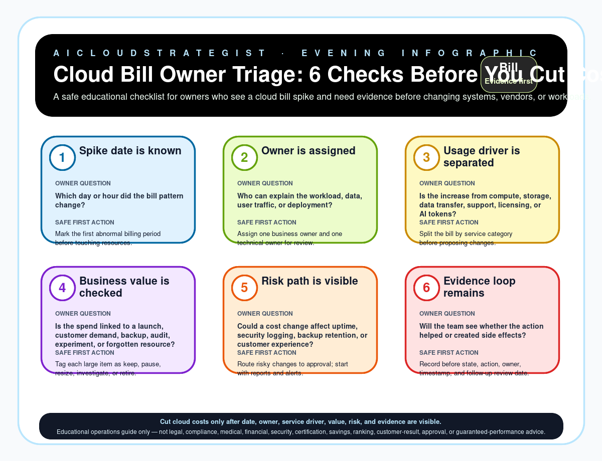

Evening publication · cloud bill triage
Cloud Bill Owner Triage: 6 Checks Before You Cut Costs
A safe educational checklist for owners who see a cloud bill spike and need evidence before changing systems, vendors, or workloads.

Six checks before cloud cost changes
| Step | Check | Owner question | Safe first action |
|---|---|---|---|
| 1 | Spike date is known | Which day or hour did the bill pattern change? | Mark the first abnormal billing period before touching resources. |
| 2 | Owner is assigned | Who can explain the workload, data, user traffic, or deployment? | Assign one business owner and one technical owner for review. |
| 3 | Usage driver is separated | Is the increase from compute, storage, data transfer, support, licensing, or AI tokens? | Split the bill by service category before proposing changes. |
| 4 | Business value is checked | Is the spend linked to a launch, customer demand, backup, audit, experiment, or forgotten resource? | Tag each large item as keep, pause, resize, investigate, or retire. |
| 5 | Risk path is visible | Could a cost change affect uptime, security logging, backup retention, or customer experience? | Route risky changes to approval; start with reports and alerts. |
| 6 | Evidence loop remains | Will the team see whether the action helped or created side effects? | Record before state, action, owner, timestamp, and follow-up review date. |
Truth boundary
Educational operations guide only — not legal, compliance, medical, financial, security, certification, savings, ranking, customer-result, approval, or guaranteed-performance advice.